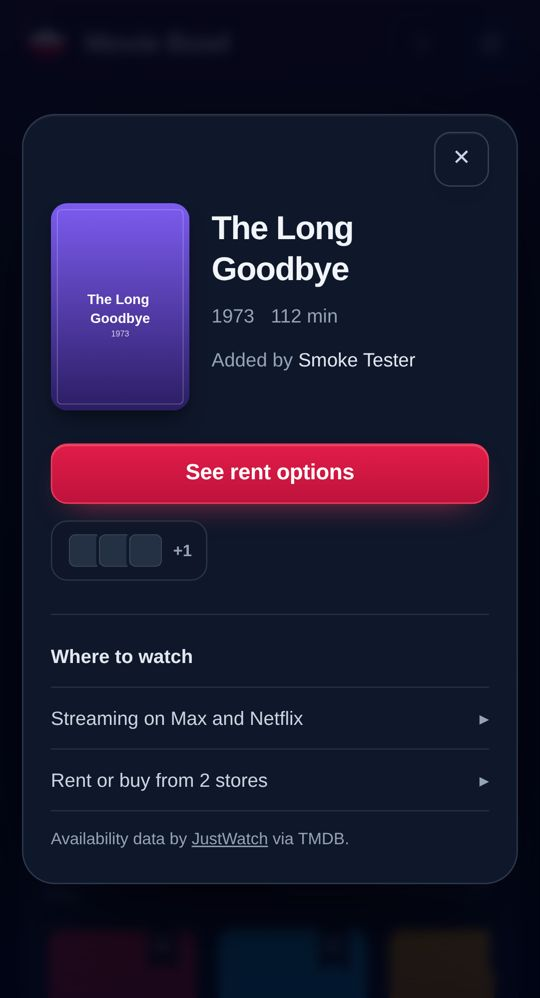
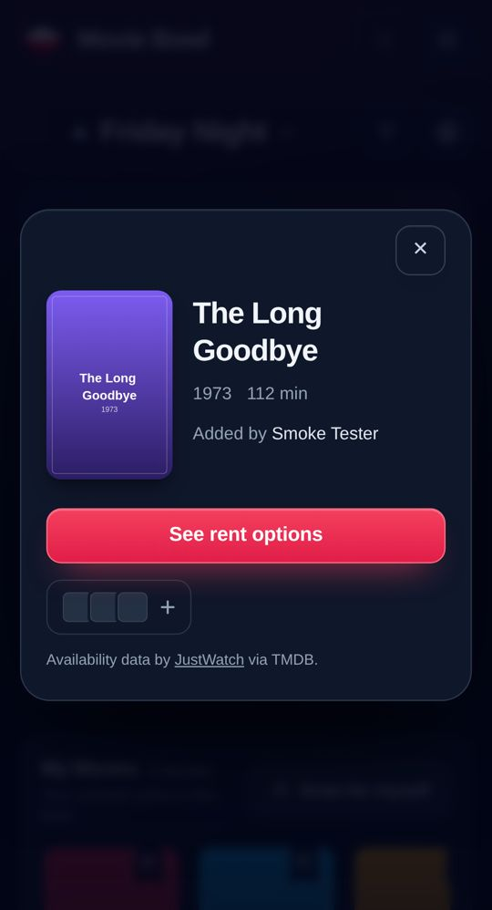
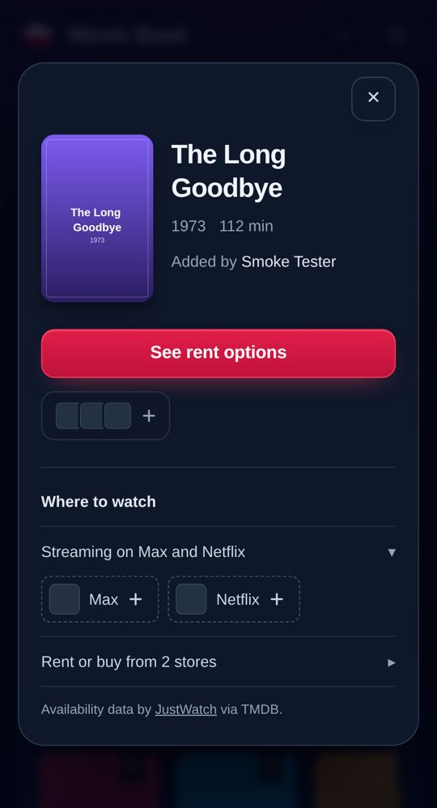
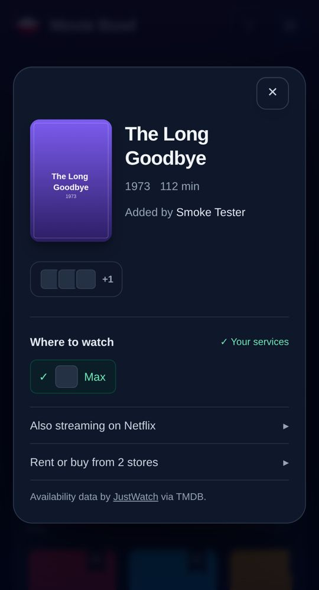

Finding streaming services later
The first draw offers them
The first run no longer asks for services, so the drawn movie does. This is an account with no services, drawing a title that streams on Max and Netflix. The grey squares stand in for service logos, which the test backend does not have.

Today. The services are folded into a line of text, and nothing says they could be yours.

Proposed. The logo row under the button ends in a + instead of a count.

Tapping it opens Where to watch with the services already showing, each one a dashed pill with a +.

Tap Max and it's yours: green, ticked, first in the list. Your filters can favor it from then on.
- Once you have any service, the other services stay folded as they are today, but each one still carries its + when opened.
- In the last frame the rent button goes away, because the title is now on your service. Nothing replaces it because Settings' "Open the service's website for a drawn movie" is off for a new account. Every account with that setting off already sees the same thing today, and this change leaves it alone.